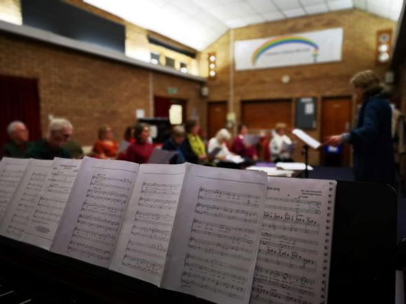
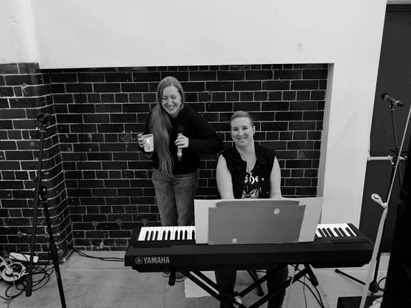
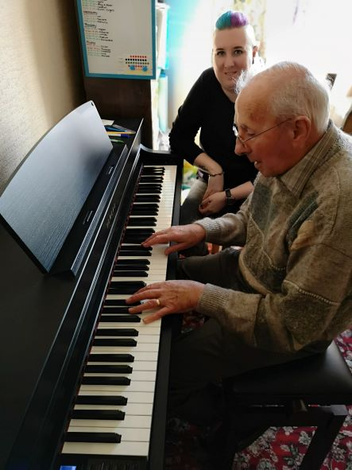

Young Beginners (Ages 4+)
Play-based musical games, ear training, rhythm discovery, and encouraging guidance designed to foster a lifelong love for music from an early age.
Friendly, highly qualified piano teaching and professional choir accompaniment in Hull. Creating supportive, tailored music lessons where every student flourishes.
A committed music educator with a classical foundation and an inclusive heart.
Based in Hull, Hannah graduated from the University of Hull with a deep foundation in classical piano. Since launching her music school in 2015, she has nurtured a dedicated teaching studio holding a 100% student examination pass rate.
Hannah believes music is for everyone without exception. She specializes in inclusive tuition, teaching students across all educational backgrounds, including those with Special Educational Needs (SEN), and is proficient in British Sign Language (BSL).
Whether preparing for ABRSM / Trinity exams or learning favorites in jazz, blues, and popular contemporary styles, lessons are structured around a healthy physical technique and pure musical joy.

From 4 to 80 years old — teaching structured around your personal learning style.
Play-based musical games, ear training, rhythm discovery, and encouraging guidance designed to foster a lifelong love for music from an early age.
Proven 100% exam pass rate across ABRSM & Trinity grades. Rigorous sight-reading development, aural training, and solid performance technique.
Patient, sensory-aware tuition adapted for neurodiverse students, ADHD, autism, physical adaptations, and deaf or hard-of-hearing learners using BSL.
Flexible, zero-pressure tuition for adults picking up the piano for the first time or returning after years away. Learn songs you actually love.
Experienced sight-reader and professional accompanist for choirs, festivals (Cottingham Music Festival, Trinity Market Sessions), and vocalists.
Explore classical, pop, jazz, blues, and film themes. Technique adapts to whatever genre inspires the student most.
Hannah has accompanied community and concert choirs across East Yorkshire for many years. Her rapid sight-reading ability and dynamic musical sensitivity ensure every soloist and choral section sounds their absolute best.
Watch an excerpt of Hannah performing at the piano below:
Video Context: Hannah Watts performs seated at an upright piano in a warm acoustic setting. Her hands move gracefully across the keyboard playing lyrical arpeggios, dynamic chord changes, and balanced melody lines suitable for classical performance and choral accompaniment.

Real reviews from families and pupils who learn with Hannah in Hull.
"Hannah is a very patient, caring and flexible teacher and can cater for all needs. My son loves his lessons, would highly recommend."
"Hannah is a very supportive, kind and patient teacher but above all is fun. Her passion for music and helping others learn is inspiring. She goes above and beyond for each of her pupils!"
"I've been learning piano with Hannah for a year and a half. She makes learning fun and helped me pass my Grade 3 with Distinction. Highly recommended!"
"Hannah communicates with my daughters (aged 5 and 9) so well and makes them feel completely comfortable. The learning is structured, fun, and progress has been wonderful."
"My daughter was only 4 when she started after watching her brother. Hannah adapted her teaching wonderfully for Amy who is making steady, joyful progress."
"Hannah is always supportive and patient when teaching me. She encourages me at every turn and always makes each lesson feel rewarding and fun."
Answer 4 quick questions. We'll assemble your personal enquiry ready to send instantly via Email or WhatsApp.
Helpful information on lesson setup, Hull locations, instrument needs, and inclusive tuition.
Hannah provides one-to-one tuition at her dedicated teaching studio in Hull. Please note that home visits are not currently offered, though this policy may be reviewed in the future.
Students can begin as young as 4 years old. For younger beginners, 30-minute sessions are ideal to maintain focus and joy. Older children, teens, and adults typically take 45-minute or 60-minute lessons tailored to their individual goals.
Hannah adapts each lesson to the student's unique sensory, physical, and communication requirements. With British Sign Language (BSL) proficiency, deaf or hard-of-hearing students can learn directly without language barriers. Lessons move at a comfortable, calm pace with visual cues and zero stress.
Not right away! While an acoustic piano or 88-key weighted digital piano is ideal for advanced technique, beginners can happily start on a touch-sensitive electronic keyboard while exploring their interest.
Exams are completely optional. While Hannah holds a 100% exam pass rate for students wishing to pursue ABRSM or Trinity grades, many pupils choose to learn purely for fun, relaxation, and personal repertoire enjoyment.

Have questions or want to discuss lesson availability? Hannah is always happy to help.